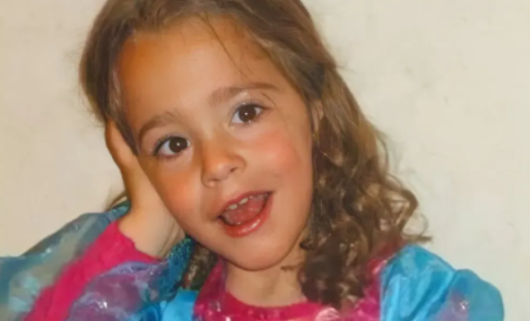
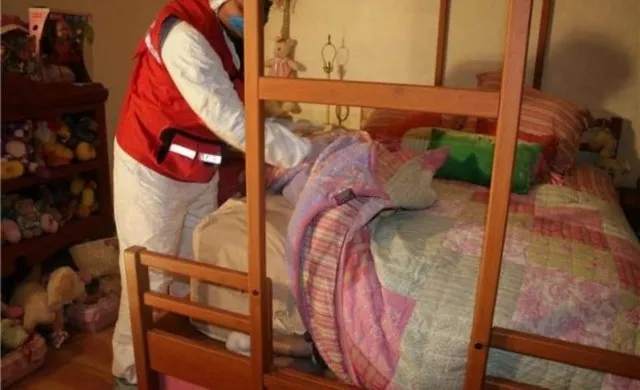

Paulette Gebara tenía 4 años para la edad de su muerte, era una niña que nació y vivió su corta vida con discapacidad motriz y de lenguaje. Por ende, sus padres le tenían dos niñeras a ella y a su hermana para que estuvieran pendientes y los ayudara.
Acontecimientos
El 22 de marzo de 2010, Paulette Gebara, una niña de cuatro años, desapareció de su propia cama en Huixquilucan, Estado de México. Su madre le había puesto el pijama y le dio un beso de buenas noches. Pero a la mañana siguiente, cuando la intentó despertar su niñera para que fuera al colegio, la niña no estaba. Ni ahí ni en ninguna parte. No había cerraduras forzadas ni indicios de que fuera secuestrada.
El caso fue seguido por todos los medios de comunicación y llamó la atención del país entero, incluso famosos y celebridades muy reconocidos de México estaban al tanto y aportando su ayuda.
Inmediatamente, buscaron en el departamento, el edificio y hasta en la piscina del condominio en el que vivía Paulette junto a sus padres, Mauricio Gebara y Lisette Farah, y su hermana. Pero no lograban dar con el paradero de la pequeña.
La familia Gebara vivía en una zona exclusiva y muy adinerada del Valle de México, Interlomas, por lo que pudieron usar sus contactos para que la investigación se mueva rápido. Lo cual resultó en que una gran cantidad de nombres importantes se involucren en el caso. Esto, por supuesto, atrajo a los medios y, por consiguiente, al público. Así, la búsqueda de Paulette se volvió en algo que era cubierto las 24 horas del día en la televisión y en la radio, ocupaba la tapa de los diarios, se volvió viral en Facebook y Twitter, era un tema de conversación con cualquier persona que te encontraras en la calle.
La casa se llenó de oficiales e investigadores, quienes no encontraron ninguna marca en la puerta que les indique que fue forzada y tampoco había ventanas rotas. Los agentes también hurgaron en los alrededores del domicilio, pero no encontraron nada. De hecho, la seguridad privada del lugar les dijo que no habían visto a nadie entrar o salir. Para colmo, las cámaras sólo servían para monitorear y no tenían registro de las imágenes.
La investigación incluyó 100 agentes de la Policía Judicial y de la Ministerial apoyados con perros adiestrados, se realizaron 23 peritajes en distintas especialidades, 6 exámenes de poligrafía, se analizaron 16 cámaras de video, se practicaron 32 entrevistas con los padres de Paulette, otras tantas con familiares y vecinos, se hicieron 66 inspecciones ministeriales y se revisaron 12 domicilios aledaños
Sin embargo, nueve días después, cuando el caso parecía estar a punto de resolverse, ocurrió algo insólito: el cuerpo de la niña fue encontrado al pie de la cama, enredado entre las sábanas. Ahí habían tenido lugar decenas de entrevistas y trabajos policiales, y nadie había visto nada; pero según la versión “oficial”, el cadáver había estado ahí todo el tiempo.
El procurador Bazbaz anunció que, durante
"diligencias ministeriales", fue encontrada la niña
"en la habitación de la propia Paulette, al pie de su cama, entre el colchón y la estructura del mueble que lo sostiene, y cubierta por la sábana y colcha de la misma".
La causa de muerte
La explicación que se ofreció entonces fue que Paulette rodó sobre su cama, cayó entre el espacio en esta y la pared, quedó atrapada entre las sábanas y falleció. Luego de la autopsia, Alberto Bazbaz confirmó que murió por asfixia mecánica por obstrucción de fosas nasales y compresión toracoabdominal.
“No existen lesiones u otros indicios que indiquen maniobras de defensa por resistencia previas al fallecimiento, ni evidencias de que la oclusión nasal fuera producida por otra persona”, anunció el procurador en su momento. Los investigadores tampoco encontraron rastros de fármacos o sustancias tóxicas en el cuerpo que pudieran haber afectado el estado de la menor. Además, se afirmó que el deceso ocurrió entre la noche del 21 de Marzo y las primeras horas de la madrugada del 22. Bazbaz también señaló que el cuerpo no fue manipulado después de su muerte.
Farah exigió que le fuera entregado el expediente judicial de la investigación, ya que ponía en duda el dictamen que dieron en la procuraduría, en el que declararon su muerte como accidental.

Posibles sospechosos
Ante la presión de la prensa y de la opinión pública, la familia se vio forzada a realizar entrevistas para dar detalles sobre el caso. Además, creyeron que podían utilizar a los medios para intimidar o sensibilizar a los potenciales secuestradores. Es así que comienzan a verse involucrados diferentes periodistas, una de ellas, Lilly Téllez, quien le hizo una entrevista a la madre en el cuarto de la niña el 25 de Marzo.
Esta exposición en los medios generó una guerra de declaraciones entre Lizette Farah y Mauricio Gebara, los padres de la niña. En primera instancia, los encargados de la investigación se acercaron a Amanda de la Rosa, una actriz mexicana también conocida como La China, quien era la mejor amiga de la madre. Ella reveló que ese viaje al Valle de Bravo del que habíamos hablado en realidad fue a Los Cabos y que fueron acompañadas por el personal trainer de Lizette con el que tenía un cariño muy especial; allí se quedaron en una casa con siete amigos más. Luego, los padres de Paulette comenzaron a tirarse la culpa entre ellos: Mauricio acusó a su señora de meter un bulto a su casa y no a su hija y la amenazó con decírselo a la policía. Ella lo insultó y se enojó por las dudas de él. Al día siguiente, a petición de Castillo, ambos acudieron a ratificar sus declaraciones ante la Procuraduría. La pareja se separó después de esto.
Después de volver a interrogar a los dos, el juez tercero de lo penal de Tlalnepantla les ordenó un arraigo de 30 días, debido a inconsistencias y falsedades en sus declaraciones, junto a Érika y Marta. Los cuatro fueron trasladados a un inmueble bajo el resguardo de la Procuraduría de Justicia del Estado de México. No obstante, para el Procurador General Alberto Bazbaz, la madre era la principal sospechosa, pues una noche antes de la muerte de la menor, ella le dio su medicamento, cosa que normalmente no hacía y las niñeras no supieron qué fármaco le administró. Además, surgieron versiones sobre un trastorno de personalidad de Lizette y los medios comenzaron a exhibirla como la victimaria. No obstante, las nanas también declararon que cuando Mauricio llegó a su casa y le dijeron de la desaparición, se puso a fumar un cigarro y a buscar sin interés alguno.
El 27 de Marzo, la investigación se extendió hasta la Ciudad de México, a través de la decisión del procurador Miguel Ángel Mancera. Al día siguiente, Alberto Bazbaz descartó el secuestro de Paulette y dio una conferencia de prensa en la cual afirmó que el arraigo contra los padres no era por alguna sospecha en su contra, sino para tener contacto permanente con ellos y las dos niñeras. Sin embargo, en el expediente publicado en el libro del periodista Martín Moreno, quien se basa en la investigación previa del caso, los policías ministeriales a cargo del caso indicaron que, durante las conversaciones, Mauricio Gebara les confesó:
“yo sé dónde se encuentra Paulette, y solamente se los diré si me ayudan de forma legal, para que yo no tenga ningún problema con la justicia. Tengo miedo de ir a la cárcel”. Mientras que Lizette Farah dijo:
“yo sé dónde está Paulette, y también sé quiénes la desaparecieron, fue mi esposo”.
Luego de las declaraciones de Mauricio Gebara y Lisette Farah, vinieron las de las dos niñeras que cuidaban a los hijos del matrimonio:
"Esta familia tiene muchos problemas. Además, la propia señora Lisette nos ha manifestado que estemos tranquilas y que no nos va a pasar nada, y sobre su cadáver, que ella se hacía responsable de todo, hasta sus últimas consecuencias (textual)”, dijo una de ellas.